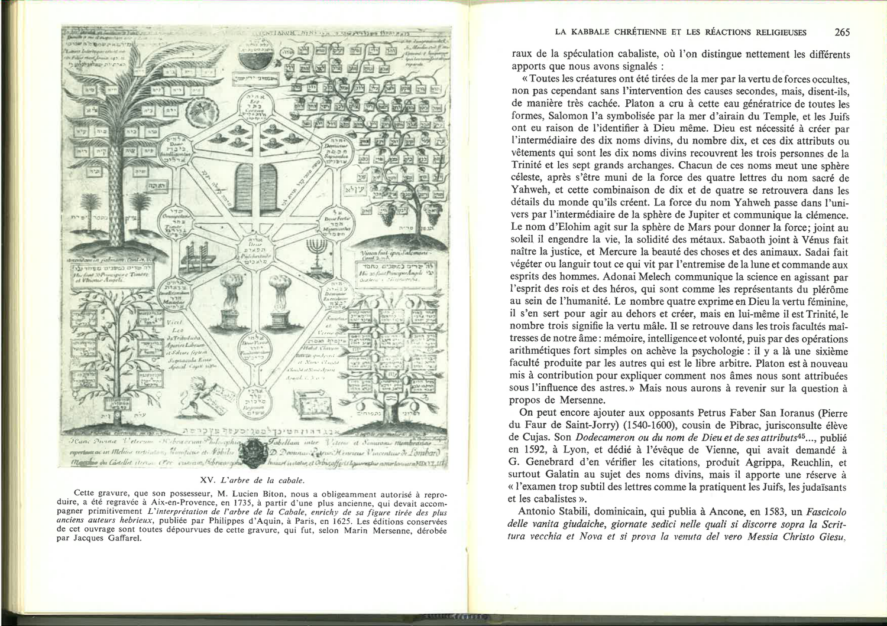

Chunk 47
Pages 147-150
Secret surveys prominent Catholic intellectuals whose public postures rejected Kabbalah while their writings reveal ambivalent engagement. Erasmus, champion of "trilinguis homo" (the three-language ideal), detested Hebrew learning, dismissing Kabbalah as Talmudic fables, Tetragram mysticism, and "nugæ" (trifles) in letters to Capito, Wolsey, and Albert of Brandenburg. Yet after reading Paul Rici's vernacular introduction to Kabbalah, Erasmus conceded it had rendered him "more equitable" toward the subject—a grudging acknowledgment of persuasive power.
Augustinus Steuchus (Steuco of Gubbio), Augustinian canon and Vatican librarian, opposed Clement VII's planned Jewish-Christian biblical commission, fearing Jewish deception. His *Recognitio* (1531) announced a planned attack on cabalists, yet his *Cosmopoeia* (1535) prudently distinguished Jewish deliriums from legitimate Platonic-influenced mysticism practiced by wise Christians. He conceded cabalists extracted "interesting if uncertain" thoughts on soul and immortality via mystical methods, and refused to conflate their practices with ignorant superstition—a nuanced critique.
Jean Cochlaeus (1479–1552) reproduced Steuco's formula, condemning those making Kabbalah an oracle while citing kabbalistic texts from Galatin (whom he knew in Rome), having studied with Elia Levita. Angelo Canini termed Kabbalah "methodical folly," attacking practitioners who arithmetically and geometrically dissected divine names, yet published Ludovicus Carret's mystical exegeses—a contradiction Secret leaves unresolved.
The Jesuit Juan Maldonat mocked Archangelus of Burgonovo's angelic calculus (600 million angels) and cabalist explanations of Jacob's wrestling match, dismissing them as fabulous. Ascanio Martinengo, Dominican pupil of a Kabbalah-friendly master (Hieronymus Vielmius), turned critic, rejecting Pico's and Hamerus's *Bereshit* exegesis as false Hebrew philology and empty letter-play. Yet Vielmius himself, Martinengo's teacher, praised Pico's cabalistic boldness and habitually invoked cabalists' explanations of Scripture, particularly Mosaic exaltation in the Jubilee and metaphorical readings of heavenly hearing.
The chunk contains two images (pp. 149–150): an engraved portrait labeled "XII. Blaise de Vigenère" and a complex diagram titled "XV. L'arbre de la cabale" (The Tree of Kabbalah), a volvelle showing kabbalistic sephirotic correspondences with celestial and planetary attributions. The engraving was originally published by Philippe d'Aquin (Paris 1625) but later stolen by Jacques Gaffarel; the reproduction dates from Aix-en-Provence 1735. This visual testimony to Kabbalah's institutional and artistic presence complements textual evidence.

Gravure emblématique : arbre / diagramme kabbalistique figuré